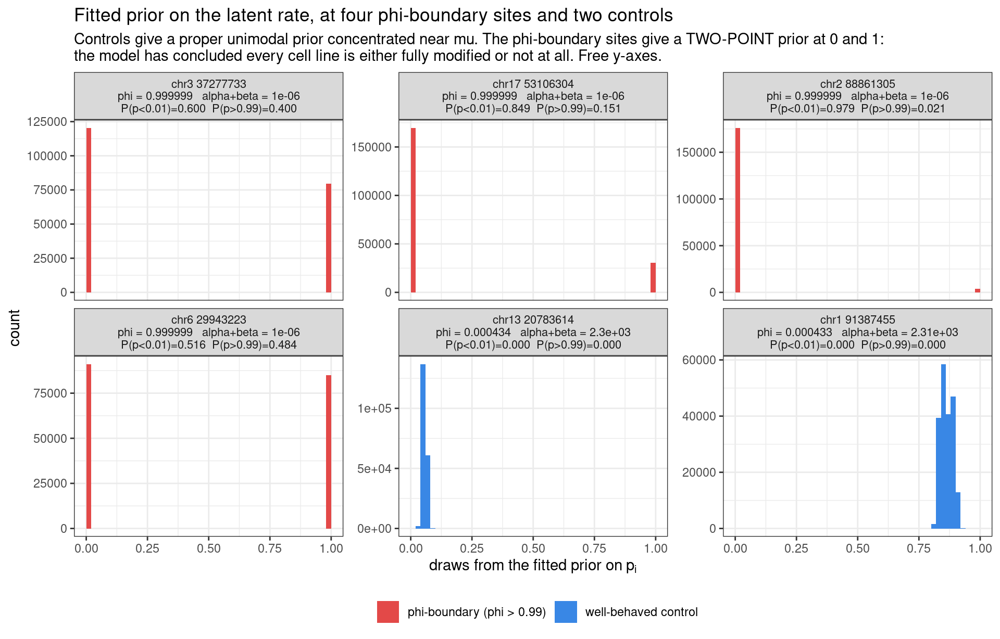

Last updated: 2026-08-29
Checks: 6 1
Knit directory: pumseq/
This reproducible R Markdown analysis was created with workflowr (version 1.7.0). The Checks tab describes the reproducibility checks that were applied when the results were created. The Past versions tab lists the development history.
The R Markdown is untracked by Git. To know which version of the R
Markdown file created these results, you’ll want to first commit it to
the Git repo. If you’re still working on the analysis, you can ignore
this warning. When you’re finished, you can run
wflow_publish to commit the R Markdown file and build the
HTML.
Great job! The global environment was empty. Objects defined in the global environment can affect the analysis in your R Markdown file in unknown ways. For reproduciblity it’s best to always run the code in an empty environment.
The command set.seed(20260202) was run prior to running
the code in the R Markdown file. Setting a seed ensures that any results
that rely on randomness, e.g. subsampling or permutations, are
reproducible.
Great job! Recording the operating system, R version, and package versions is critical for reproducibility.
Nice! There were no cached chunks for this analysis, so you can be confident that you successfully produced the results during this run.
Great job! Using relative paths to the files within your workflowr project makes it easier to run your code on other machines.
Great! You are using Git for version control. Tracking code development and connecting the code version to the results is critical for reproducibility.
The results in this page were generated with repository version e844007. See the Past versions tab to see a history of the changes made to the R Markdown and HTML files.
Note that you need to be careful to ensure that all relevant files for
the analysis have been committed to Git prior to generating the results
(you can use wflow_publish or
wflow_git_commit). workflowr only checks the R Markdown
file, but you know if there are other scripts or data files that it
depends on. Below is the status of the Git repository when the results
were generated:
Ignored files:
Ignored: analysis/qtl_mapping_summary_cache/
Untracked files:
Untracked: analysis/qtl_mapping_betabinomial_meandisp_model.Rmd
Untracked: analysis/qtl_mapping_betabinomial_npcs_tradeoff.Rmd
Unstaged changes:
Modified: analysis/index.Rmd
Note that any generated files, e.g. HTML, png, CSS, etc., are not included in this status report because it is ok for generated content to have uncommitted changes.
There are no past versions. Publish this analysis with
wflow_publish() to start tracking its development.
suppressMessages({ library(data.table); library(ggplot2) })
knitr::opts_chunk$set(echo = TRUE, warning = FALSE, message = FALSE,
fig.align = "center", fig.width = 10)
PSI <- "/project/xinhe/xsun/pumseq/pumseq_processed/psi_qtl"
PC <- file.path(PSI, "qtl_betabinomial/prior_pi_cases")
D <- file.path(PSI, "qtl_betabinomial/phi_vs_npcs")
par_cases <- fread(file.path(PC, "case_params.tsv"), sep = "\t")
draws <- fread(file.path(PC, "prior_draws.tsv.gz"), sep = "\t")
obs <- fread(file.path(PC, "observed.tsv"), sep = "\t")
sweep <- fread(file.path(D, "phi_by_npcs_auto_noUCcalled.txt.gz"), sep = "\t")
PHI_EPS <- 1e-6This page restates the beta-binomial pU-QTL model in mean–dispersion form. The likelihood is unchanged — this is the same model as on the original model page, and no result changes numerically. What changes is that the prior on the latent modification rate is written explicitly, which makes it something you can plot and inspect per site. That turned out to matter: the diagnostic in §4 is only obvious in this parameterization.
Because it is the same model, results are not kept
in a separate tree — there is no “old” versus “new” set of numbers to
keep apart. fit_bb_mle has always computed \(\varphi = 1/(\alpha+\beta+1)\) internally;
what was missing was writing it out.
For one pU site, let cell line \(i\) have \(y_i\) converted reads out of \(n_i\) total. The modification rate is itself a random quantity \(p_i\), drawn from a Beta prior whose mean is modelled and whose dispersion is shared:
\[ y_i \mid p_i \sim \text{Binomial}(n_i,\, p_i), \qquad p_i \sim \text{Beta}(\mu_i,\, \varphi) \]
\[ \text{logit}(\mu_i) = \beta_0 + \beta_g G_i + z_i^\top \gamma \]
where \(\text{Beta}(\mu, \varphi)\) denotes the Beta distribution reparameterized by its mean and dispersion,
\[ \alpha_i = \mu_i \frac{1-\varphi}{\varphi}, \qquad \beta_i = (1-\mu_i)\frac{1-\varphi}{\varphi}, \qquad \varphi = \frac{1}{\alpha_i + \beta_i + 1} \]
Marginalising over \(p_i\) gives the beta-binomial for \(y_i\), with
\[ E[y_i] = n_i\mu_i, \qquad \text{Var}(y_i) = n_i\mu_i(1-\mu_i)\bigl[1 + (n_i-1)\varphi\bigr] \]
\(\mu_i\) is the expected modification rate for cell line \(i\) — the thing the regression models. It varies across cell lines through genotype \(G_i\) and the covariates \(z_i\).
\(\varphi \in (0,1)\) is the over-dispersion, the intra-class correlation: how much the \(n_i\) reads at one cell line behave like correlated rather than independent trials. \(\varphi \to 0\) recovers the binomial exactly. The bracketed term is a variance inflation factor of the same form as the design effect in clustered data.
\(\alpha_i + \beta_i\) does not depend on \(i\). It equals \((1-\varphi)/\varphi\), one scalar per site. So \(\alpha_i\) and \(\beta_i\) individually vary with \(\mu_i\) but their sum is fixed — which is exactly what makes a single \(\varphi\) well defined. This is a modelling assumption: all cell lines at a site share one dispersion.
Everything is per site. \(\beta_0\), \(\beta_g\), \(\gamma\) and \(\varphi\) are all estimated separately at each site; only \(z_i\) is shared. Written with both indices, for site \(j\):
\[ p_{ij} \sim \text{Beta}(\mu_{ij}, \varphi_j), \qquad \text{logit}(\mu_{ij}) = \beta_{0j} + \beta_{gj}G_{ij} + z_i^\top\gamma_j \]
knitr::kable(data.table(
source = c("this page / `aod` / VGAM's `rho`",
"Robinson, *Understanding beta binomial regression*",
"Ferrari & Cribari-Neto / `betareg`"),
symbol = c("phi", "sigma", "phi (precision)"),
definition = c("1/(alpha+beta+1)", "1/(alpha+beta)", "alpha+beta"),
range = c("(0, 1)", "(0, Inf)", "(0, Inf)"),
direction = c("larger = MORE dispersion", "larger = MORE dispersion",
"larger = LESS dispersion")),
caption = "Three conventions in circulation. Ours and Robinson's are monotone transforms of each other (phi = sigma/(1+sigma)) and point the same way. The betareg convention is INVERTED, so 'phi = 0.99' means nearly no dispersion there and near-total degeneracy here -- always state which is meant.")| source | symbol | definition | range | direction |
|---|---|---|---|---|
this page / aod / VGAM’s
rho |
phi | 1/(alpha+beta+1) | (0, 1) | larger = MORE dispersion |
| Robinson, Understanding beta binomial regression | sigma | 1/(alpha+beta) | (0, Inf) | larger = MORE dispersion |
Ferrari & Cribari-Neto / betareg |
phi (precision) | alpha+beta | (0, Inf) | larger = LESS dispersion |
fit_bb_mle() maximises the exact beta-binomial
log-likelihood jointly over \((\beta_0,
\beta_g, \gamma, \varphi)\) by optim with an
analytic gradient:
negll <- function(theta) {
b <- theta[1:q]
phi <- PHI_EPS + (1 - 2 * PHI_EPS) * plogis(theta[q + 1]) # keeps phi in (0,1)
mu <- plogis(as.numeric(X %*% b))
k <- (1 - phi) / phi; a <- mu * k; bb <- (1 - mu) * k
-sum(lbeta(y + a, n - y + bb) - lbeta(a, bb))
}\(\varphi\) is optimised on a logit
scale so it cannot leave \((0,1)\),
with a floor PHI_EPS = 1e-6 away from \(\varphi = 0\), where \(k = (1-\varphi)/\varphi \to \infty\)
degenerates the likelihood. The constant \(\log\binom{n_i}{y_i}\) is dropped inside
the objective (it cancels in the LRT) and added back to the returned
log-likelihood.
A fit is rejected (returns NULL) if the
optimiser fails to converge, if any \(\mu_i\) reaches 0 or 1, or if any
coefficient exceeds MAX_ABS_COEF. Note what is not
in that list: \(\varphi\) at its
boundary. See §4.
Per (site, cis-SNP) pair, test \(H_0: \beta_g = 0\):
\[ \Lambda = 2\bigl(\hat\ell_{\text{full}} - \hat\ell_{\text{null}}\bigr) \;\overset{H_0}{\sim}\; \chi^2_1 \]
nf_null <- fit_bb_mle(y, n, X) # beta_0, gamma, phi
nf_full <- fit_bb_mle(y, n, cbind(X, g)) # + beta_g
stat <- max(2 * (nf_full$loglik - nf_null$loglik), 0)
p_snp <- pchisq(stat, df = 1, lower.tail = FALSE)\(\varphi\) is a nuisance parameter re-estimated on both sides — the null and full models are separate fits, each with its own \(\hat\varphi\). That is what makes the 1-df reference legitimate: the two models differ by exactly one parameter, \(\beta_g\).
This is the payoff of the explicit parameterization. Under the null (\(\beta_g = 0\)) the fitted model states a full prior distribution for each cell line’s latent rate, \(p_i \sim \text{Beta}(\mu_i, \varphi)\), and that distribution can be drawn.
Because the covariates are retained, \(\mu_i\) varies across cell lines, so there is not one prior curve but one per cell line. What is plotted below is the marginal prior, pooling draws over cell lines; the \(\mu_i\) range is printed so the spread is visible (it is narrow — the PC coefficients are small relative to the intercept).
d <- copy(draws)
lab <- par_cases[, .(sid, group,
# %.6f not %.4g: the latter renders 0.999999 as "1", which reads as
# exactly 1 rather than as the numerical cap.
txt = sprintf("chr%s\nphi = %.6f alpha+beta = %.3g\nP(p<0.01)=%.3f P(p>0.99)=%.3f",
sid, phi, alpha_plus_beta, P_below_0.01, P_above_0.99))]
d <- merge(d, lab, by = c("sid", "group"))
d[, panel := factor(txt, levels = lab$txt)]
ggplot(d, aes(p, fill = group)) +
geom_histogram(breaks = seq(0, 1, 0.02), colour = NA) +
scale_fill_manual(values = c(`phi-boundary (phi > 0.99)` = "#e34948",
`well-behaved control` = "#3987e5"), name = NULL) +
facet_wrap(~ panel, ncol = 3, scales = "free_y") +
labs(x = expression("draws from the fitted prior on"~p[i]), y = "count",
title = "Fitted prior on the latent rate, at four phi-boundary sites and two controls",
subtitle = paste("Controls give a proper unimodal prior concentrated near mu.",
"The phi-boundary sites give a TWO-POINT prior at 0 and 1:",
"\nthe model has concluded every cell line is either fully modified or not at all.",
"Free y-axes.")) +
theme_bw(base_size = 11) + theme(legend.position = "bottom",
strip.text = element_text(size = 8.2))
knitr::kable(par_cases[, .(
site = paste0("chr", sid), group, n_cl,
phi = sprintf("%.6f", phi),
`alpha+beta` = signif(alpha_plus_beta, 3),
`sigma (Robinson)` = signif(sigma_robinson, 3),
`mu_i range` = sprintf("%.3f - %.3f", mu_min, mu_max),
`P(p<0.01)` = round(P_below_0.01, 3),
`P(p>0.99)` = round(P_above_0.99, 3),
`prior SD` = round(prior_sd_median, 3))],
caption = "At every phi-boundary site the two tail masses sum to 1.000 -- the prior has no interior mass at all -- and the prior SD is ~0.49, the maximum attainable on (0,1). The controls sit at 0.005-0.007.")| site | group | n_cl | phi | alpha+beta | sigma (Robinson) | mu_i range | P(p<0.01) | P(p>0.99) | prior SD |
|---|---|---|---|---|---|---|---|---|---|
| chr3 37277733 | phi-boundary (phi > 0.99) | 50 | 0.999999 | 1.00e-06 | 1.00e+06 | 0.349 - 0.496 | 0.600 | 0.400 | 0.488 |
| chr17 53106304 | phi-boundary (phi > 0.99) | 50 | 0.999999 | 1.00e-06 | 1.00e+06 | 0.080 - 0.256 | 0.849 | 0.151 | 0.360 |
| chr2 88861305 | phi-boundary (phi > 0.99) | 45 | 0.999999 | 1.00e-06 | 1.00e+06 | 0.001 - 0.120 | 0.979 | 0.021 | 0.122 |
| chr6 29943223 | phi-boundary (phi > 0.99) | 44 | 0.999999 | 1.00e-06 | 1.00e+06 | 0.351 - 0.613 | 0.516 | 0.484 | 0.496 |
| chr13 20783614 | well-behaved control | 50 | 0.000434 | 2.30e+03 | 4.35e-04 | 0.044 - 0.069 | 0.000 | 0.000 | 0.005 |
| chr1 91387455 | well-behaved control | 50 | 0.000433 | 2.31e+03 | 4.34e-04 | 0.828 - 0.906 | 0.000 | 0.000 | 0.007 |
What this says. At a site with \(\varphi \to 1\), \(\alpha_i + \beta_i \to 0\) and the Beta prior collapses onto point masses at 0 and 1. The model is asserting that each cell line’s true rate is exactly 0 or exactly 1 — no intermediate stoichiometry is possible. That is not a fitted dispersion, it is a degenerate solution, and any LRT computed against it is computed from a boundary.
The %pU panels show why the optimiser goes there: at
these sites the observed %pU values really do sit at 0 or
~100 within each genotype class, so a two-point prior is the
likelihood-maximising description. The LRT then reports an extreme
p-value which is really a statement that the phenotype is bimodal, not
that the SNP is associated.
knitr::kable(obs[!is.na(lead_snp), .(
site = paste0("chr", sid[1]), group = group[1],
`lead cis-SNP` = lead_snp[1],
`LRT p` = signif(lead_p[1], 3),
`cell lines` = .N,
`frac %pU = 0` = sprintf("%.2f", mean(pu == 0)),
`frac %pU > 0.9` = sprintf("%.2f", mean(pu > 0.9)),
# as.numeric: median() of an integer vector returns integer for odd-length
# groups and double for even-length ones, which breaks data.table's per-group
# type check.
`median depth` = as.numeric(median(n))), by = sid][, -1],
caption = "The same sites, from the data side: at the phi-boundary sites most cell lines sit at exactly 0 or above 0.9, with little in between.")| site | group | lead cis-SNP | LRT p | cell lines | frac %pU = 0 | frac %pU > 0.9 | median depth |
|---|---|---|---|---|---|---|---|
| chr3 37277733 | phi-boundary (phi > 0.99) | 3:37275552:T:C | 0.00e+00 | 50 | 0.38 | 0.14 | 76.0 |
| chr17 53106304 | phi-boundary (phi > 0.99) | 17:53106127:C:T | 0.00e+00 | 50 | 0.84 | 0.12 | 28.0 |
| chr2 88861305 | phi-boundary (phi > 0.99) | 2:88866214:A:G | 1.30e-06 | 45 | 0.98 | 0.02 | 12.0 |
| chr6 29943223 | phi-boundary (phi > 0.99) | 6:29945891:T:G | 0.00e+00 | 44 | 0.30 | 0.41 | 87.0 |
| chr13 20783614 | well-behaved control | 13:20782309:C:T | 5.64e-02 | 50 | 0.42 | 0.00 | 16.5 |
| chr1 91387455 | well-behaved control | 1:91387539:G:A | 1.29e-02 | 50 | 0.00 | 0.22 | 28.0 |
\(\varphi\) is bounded, and both ends are pathological:
Both are reachable in practice, and which one is hit depends on how many covariates the mean model carries:
s <- sweep[ok == TRUE]
knitr::kable(s[, .(
`sites fitted` = format(.N, big.mark = ","),
`median phi` = signif(median(phi), 3),
`at the phi=0 floor (1e-6)` = sprintf("%.1f%%", 100 * mean(phi <= 1.01 * PHI_EPS)),
`phi > 0.99` = sprintf("%.2f%%", 100 * mean(phi > 0.99))),
by = .(`k (PCs)` = npcs)][order(`k (PCs)`)],
caption = "Null fits across covariate counts, autosome-only phenotype. Adding PCs moves the degeneracy from the upper boundary to the LOWER one -- at k = 20 most fits have collapsed to the binomial limit.")| k (PCs) | sites fitted | median phi | at the phi=0 floor (1e-6) | phi > 0.99 |
|---|---|---|---|---|
| 0 | 9,228 | 1.40e-02 | 0.0% | 1.29% |
| 3 | 10,454 | 4.34e-04 | 0.0% | 0.21% |
| 5 | 9,969 | 3.23e-05 | 0.0% | 0.05% |
| 7 | 9,490 | 6.50e-06 | 0.1% | 0.01% |
| 10 | 8,777 | 1.50e-06 | 0.6% | 0.00% |
| 15 | 7,665 | 1.00e-06 | 13.6% | 0.00% |
| 20 | 6,559 | 1.00e-06 | 88.6% | 0.00% |
Consequences for the pipeline, both documented on the covariate-count page:
fit_bb_mle, alongside the existing \(\mu\) and MAX_ABS_COEF guards,
and it must be two-sided — the \(\varphi \to 0\) boundary is the one that
dominates at high \(k\).knitr::kable(data.table(
setting = c("sites", "cell lines", "covariates z", "cis window", "test",
"phenotype", "excluded: U/C-variant sites", "excluded: phi-boundary sites",
"chromosomes"),
value = c("5-fold union (>= 1 fold)", "50 genotyped", "3 M-value PCs",
"+/- 5 kb, MAF >= 0.05", "LRT on beta_g, 1 df",
"fold5_union_auto_noUCcalled_noPhi_pc3",
"1,118 (a U/C variant is called on the pU base, so %pU partly reports genotype)",
"33 (phi > 0.99, iterated to a fixed point at k = 3)",
"chr1-22 only; PCs recomputed on chr1-22")),
caption = "k = 3 PCs was selected on calibration grounds -- permutation lambda degrades monotonically as PCs are added.")| setting | value |
|---|---|
| sites | 5-fold union (>= 1 fold) |
| cell lines | 50 genotyped |
| covariates z | 3 M-value PCs |
| cis window | +/- 5 kb, MAF >= 0.05 |
| test | LRT on beta_g, 1 df |
| phenotype | fold5_union_auto_noUCcalled_noPhi_pc3 |
| excluded: U/C-variant sites | 1,118 (a U/C variant is called on the pU base, so %pU partly reports genotype) |
| excluded: phi-boundary sites | 33 (phi > 0.99, iterated to a fixed point at k = 3) |
| chromosomes | chr1-22 only; PCs recomputed on chr1-22 |
Related: covariate count and the φ boundary · filtering strategy and calibration · goodness-of-fit attempts · original α/β write-up
sessionInfo()R version 4.2.0 (2022-04-22)
Platform: x86_64-pc-linux-gnu (64-bit)
Running under: Red Hat Enterprise Linux 8.10 (Ootpa)
Matrix products: default
BLAS/LAPACK: /software/openblas-0.3.13-el8-x86_64/lib/libopenblas_skylakexp-r0.3.13.so
locale:
[1] LC_CTYPE=C.UTF-8 LC_NUMERIC=C LC_TIME=C.UTF-8
[4] LC_COLLATE=C.UTF-8 LC_MONETARY=C.UTF-8 LC_MESSAGES=C.UTF-8
[7] LC_PAPER=C.UTF-8 LC_NAME=C LC_ADDRESS=C
[10] LC_TELEPHONE=C LC_MEASUREMENT=C.UTF-8 LC_IDENTIFICATION=C
attached base packages:
[1] stats graphics grDevices utils datasets methods base
other attached packages:
[1] ggplot2_3.4.2 data.table_1.14.4 workflowr_1.7.0
loaded via a namespace (and not attached):
[1] tidyselect_1.2.0 xfun_0.38 bslib_0.3.1 colorspace_2.0-3
[5] vctrs_0.6.1 generics_0.1.3 htmltools_0.5.7 yaml_2.3.5
[9] utf8_1.2.2 rlang_1.1.2 R.oo_1.24.0 jquerylib_0.1.4
[13] later_1.3.0 pillar_1.9.0 glue_1.6.2 withr_2.5.0
[17] R.utils_2.11.0 lifecycle_1.0.4 stringr_1.5.0 munsell_0.5.0
[21] gtable_0.3.0 R.methodsS3_1.8.1 evaluate_0.15 labeling_0.4.2
[25] knitr_1.42 callr_3.7.0 fastmap_1.1.0 httpuv_1.6.5
[29] ps_1.7.0 fansi_1.0.3 highr_0.9 Rcpp_1.0.11
[33] promises_1.2.0.1 scales_1.2.0 jsonlite_1.8.7 farver_2.1.0
[37] fs_1.5.2 digest_0.6.29 stringi_1.7.6 processx_3.5.3
[41] dplyr_1.1.2 getPass_0.2-2 rprojroot_2.0.3 grid_4.2.0
[45] cli_3.6.2 tools_4.2.0 magrittr_2.0.3 sass_0.4.1
[49] tibble_3.2.1 whisker_0.4 pkgconfig_2.0.3 rmarkdown_2.21
[53] httr_1.4.5 rstudioapi_0.14 R6_2.5.1 git2r_0.30.1
[57] compiler_4.2.0